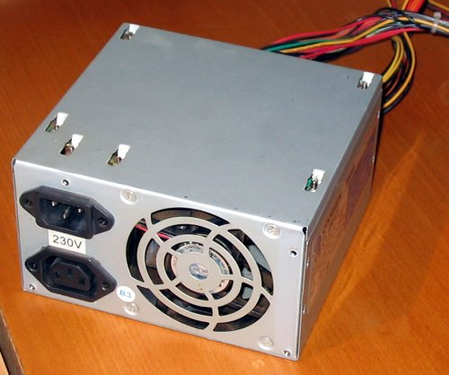

ZASILACZ
 (PSU, z ang. power supply unit) to urządzenie służące do przetwarzania napięcia przemiennego dostarczanego z sieci energetycznej (100–127 V w Ameryce Północnej, części Ameryki Południowej, Japonii i Tajwanie; 220–240 V w pozostałej części
świata) na niskie stabilizowane napięcia stałe, niezbędne do pracy pozostałych komponentów komputera.
Niektóre zasilacze posiadają przełącznik zmieniający napięcie wejściowe pomiędzy 230 V i 115 V, inne mogą pracować w szerokim
zakresie napięcia zasilania.
Zasilacze komputerów są zasilaczami impulsowymi.
Najczęściej spotykane zasilacze komputerowe są zgodne ze standardem ATX. Standard określa kształt wtyczek, dostarczane napięcia, dopuszczalne natężenie prądu. Włączanie
i wyłączenie zasilacza jest realizowane przez sygnał elektryczny z płyty głównej, co daje obsługę takich funkcji jak tryb czuwania, zdalne włączanie i wyłączanie komputera. Najnowsza wersja standardu ATX dla zasilaczy to 2.53 (z połowy
2020 roku).
źródło: https://pl.wikipedia.org/wiki/Zasilacz_komputera